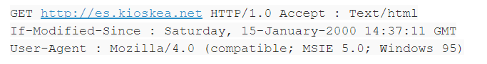
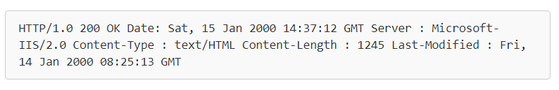

Desarrollo de Aplicaciones Web
Alberto Pascal
A01023607
Es el protocolo de transmisión de información de la World Wide Web. En otras palabras, http es el código que nos permite establecer una conexión entre una computadora y otra de manera que puedan "hablar" un mismo idioma a la hora de comunicarse por la red. Mediante el uso de este protocolo, se busca una comunicación entre servidores, clientes y proxies. Para lograr esto, se encarga de mediar las respuestas entre cliente y servidor en internet. El protocolo http establece las pautas a seguir, los métodos de petición y, conforme avanza en sus versiones, es más permisible a incorporar nuevas peticiones o funcionalidades.
Como se mencionó un poco anteriormente, http se basa en un esquema de petición-respuesta entre el servidor web y el “ usuario” o cliente que realiza la una solicitud. Con esta solicitud, se inicia una petición de intercambio de datos. Para entender mejor el funcionamiento, es necesario entender que un cliente puede ser algo tan sencillo como cualquiera de nosotros abriendo una página de nuestro explorador favorito.
A la hora que se solicitamos acceder a una página web, le mandamos al servidor las instrucciones de la información que queremos ver. Por consiguiente, el servidor brinda una respuesta estructurada de una serie de metadatos que determinan la manera en que se va a iniciar, desarrollar y cerrar la transmisión de la información. A esto se le conoce como los métodos de petición y son todos los comandos que se disparan cuando se buscan archivos que residen en un servidor.
Por otro lado, existe una versión ligeramente distinta de http conocida como https. HTTPS se define como HyperText Transfer Procotol Secure y es la versión segura del http. A diferencia de http, se basa en crear un canal cifrado a la hora de establecer la comunicación con el servidor, lo que nos protege de la intervención de terceros y de espionaje.
Independientemente de si hablamos de http o https, puede resumirse a que la comunicación se establece en dos etapas mayormente: el envío de una solicitud http por parte del navegador y el procesamiento de la solicitud y envío de respuesta.
Una solicitud HTTP se puede definir como el conjunto de líneas que se envían por parte del navegador hacia un servidor con el fin de obtener una respuesta. Esta compuesta por:
Por ejemplo:
Una respuesta HTTP se puede definir como el conjunto de líneas que el servidor envía al navegador. Está constituida por:
Por ejemplo:
